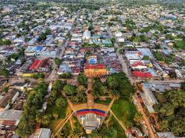
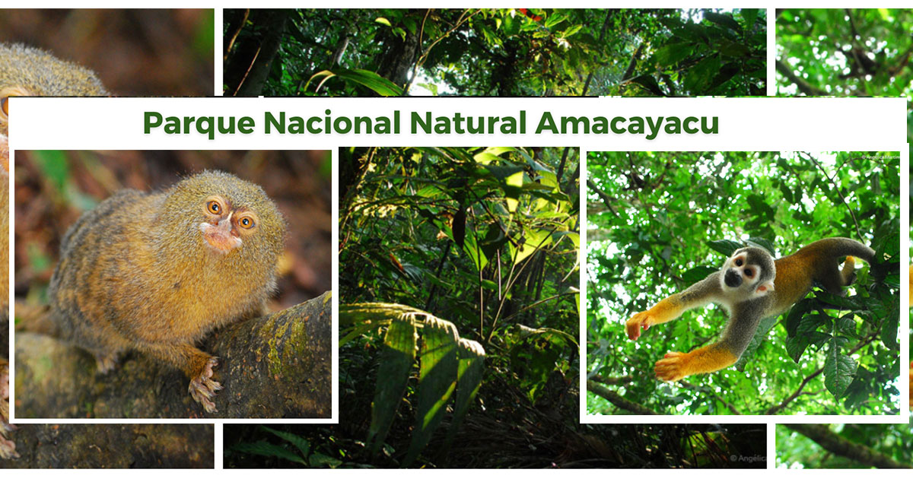
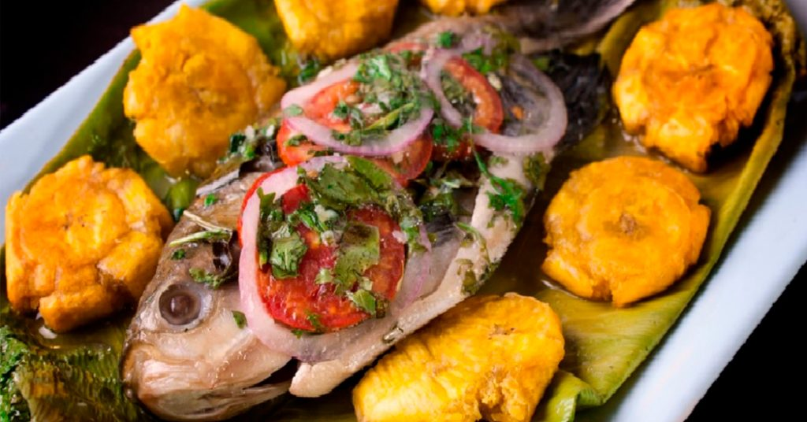
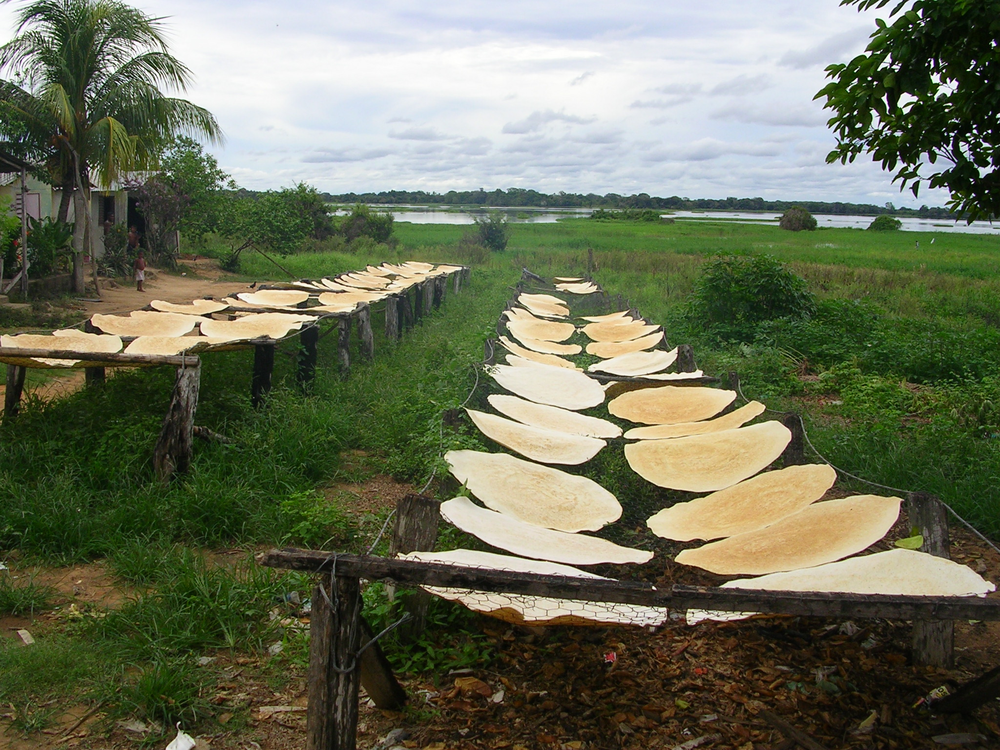
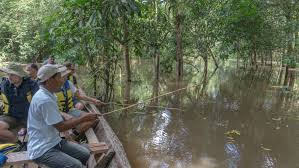

vichada
información
el departamento más extenso de Colombia, con unos 83 808 habitantes en 2023, el cuarto menos poblado —por delante de San Andrés y Providencia, Guainía y Vaupés, el menos poblado— y con 0.76 Hab/km², el tercero menos densamente poblado, por delante de Vichada y Guainía, el menos densamente poblado.
Sitios Turísticos✈️
la ciudad de leticia
Es una ciudad pluricultural, rica en tradiciones, donde residen no solo nativos de la región sino habitantes de otros rincones del país quienes han llegado allí por su interés en el comercio, las artesanías, los intercambios o simplemente por disfrutar de una ciudad enclaustrada en la selva Amazónica.

el Parque Nacional Natural Amacayacu
El Parque Nacional Natural Amacayacu, ubicado en la Amazonía colombiana, es un área protegida creada en 1975 para conservar la biodiversidad y la cultura de la región. Abarca más de 267,000 hectáreas y es hogar de diversas especies como el delfín rosado, manatíes, más de 468 aves y 150 mamíferos. El parque también es un territorio ancestral de comunidades indígenas, especialmente la etnia Tikuna, y promueve el ecoturismo comunitario y la sostenibilidad.

Lago de Tarapoto
Los Lagos de Tarapoto sustentan especies de plantas y animales como las ceibas (Ceiba pentandra), caimanes negros (Melanosuchus niger), 136 especies de peces, incluyendo el pez de agua dulce más grande que se conoce, el pirarucu (Arapaima gigas), y más de 153 especies de aves.

Gastronomía típica🍽️
la patarashca
La Patarashca es un plato tradicional de la Amazonía peruana y colombiana que consiste en un pescado (generalmente de río) envuelto en hojas de bijao (o plátano) con un relleno de verduras y especias, y cocinado a la parrilla o al horno hasta que esté sudado en sus propios jugos.

el casabe
El casabe es un pan plano, delgado, crujiente y sin levadura, elaborado a partir de la harina de yuca (mandioca). Es un alimento ancestral de la cultura taína y de otras etnias de América Latina, especialmente en la cuenca del Amazonas y el Caribe.

el mañoco
El mañoco es una harina gruesa y tostada obtenida de la raíz de la yuca (mandioca), utilizada como alimento básico en las comunidades indígenas de la Amazonía y otras regiones tropicales de países como Colombia, Venezuela y Brasil.

Área y componentes económicos💰
el turismo
Ha crecido como actividad económica, enfocándose tanto en el turismo convencional como en el contacto más directo con las comunidades indígenas y la naturaleza
Agricultura
Se centra en cultivos para el autoconsumo como el arroz, maíz, plátano, yuca y cacao.

Pesca
Es una actividad económica relevante para la región. .

Datos económicos y ocupacionales con estadísticas📊
Estadísticas Económicas y Ocupacionales:
- el Departamento de Amazonas tuvo una población estimada de 85,056 habitantes
- La economía del departamento se caracteriza por actividades agropecuarias y forestales, con cultivos como la yuca, el plátano y el arroz.
- La región amazónica en su totalidad (que abarca varios países) tiene una economía de gran escala.